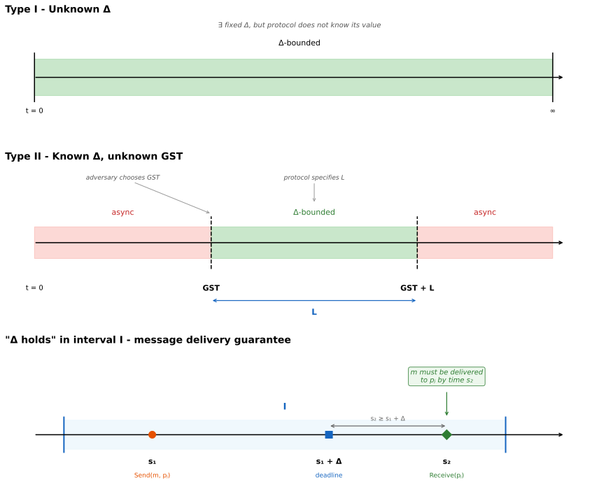

Partial Synchrony
This is a network timing assumption introduced by Dwork, Lynch, and Stockmeyer [1]. It lies between full synchrony and full asynchrony. We say that the communication bound \(\Delta\) holds in an interval \(I\) for run \(R\) provided that, if message \(m\) is placed in \(p_j\)'s buffer by some \(\text{Send}(m, p_j)\) at a time \(s_1\) in \(I\), and if \(p_j\) executes a \(\text{Receive}(p_j)\) at a time \(s_2\) in \(I\) with \(s_2 \geq s_1 + \Delta\), then \(m\) must be delivered to \(p_j\) at time \(s_2\) or earlier. Communication is partially synchronous if either (2) or (3) below holds.
In these definitions, \(\Delta\) denotes some particular positive integer:
- \(\Delta\) is known. The communication bound \(\Delta\) holds in \([1, \infty)\) for every run \(R\). That is, \(\Delta\) is known and is a fixed bound for some fixed \(\Delta\). This is the usual definition of synchronous communication.
- \(\Delta\) is unknown. For every run \(R\), there is a \(\Delta\) that holds in \([1, \infty)\). That is, a fixed upper bound on message delay exists, but its value is not known a priori. The protocol must work correctly regardless of the actual value of \(\Delta\).
- \(\Delta\) holds eventually (GST model). For every run \(R\), there is a time \(T\), called the Global Stabilization Time (GST), unknown to the processors, such that \(\Delta\) holds in \([T, T + L]\), where \(L\) is an upper bound on the time after GST required by the protocol. Before GST, messages may be delayed arbitrarily; after \(T + L\), the network may become asynchronous again. The paper uses \([T, \infty)\) as a simplification in the formal definition, but notes that any correct protocol only needs \(\Delta\) to hold for this bounded window.
Modern definitions
Type I – unknown \(\Delta\)
There exists a fixed but unknown upper bound \(\Delta\) on message delivery time. For every run, all messages sent between correct processors are delivered within \(\Delta\) time. The protocol does not know \(\Delta\) and must work correctly for any value of \(\Delta\).

Type II – known \(\Delta\), unknown GST
The message delay bound \(\Delta\) is known, but is only guaranteed to hold starting at some unknown time \(\text{GST}\) chosen by the adversary. Before \(\text{GST}\), the network is asynchronous and messages may be delayed arbitrarily. After \(\text{GST}\), all messages between correct processors are delivered within \(\Delta\). The protocol specifies a duration \(L\) such that it only requires \(\Delta\) to hold in the window \([\text{GST}, \text{GST} + L]\); after this window, the network may become asynchronous again.
Notes
- Safety properties must hold even during the asynchronous period before GST. Only termination (liveness) requires the synchrony guarantee.
- Partially synchronous processors: By replacing \(\Delta\) by \(\Phi\) (the upper bound on relative processor speeds), conditions (2) and (3) analogously define two types of partially synchronous processors. Here \(\Phi\) holds in \(I\) for \(R\) means that in any contiguous subinterval of \(I\) containing \(\Phi\) real-time steps, every correct processor must take at least one step.